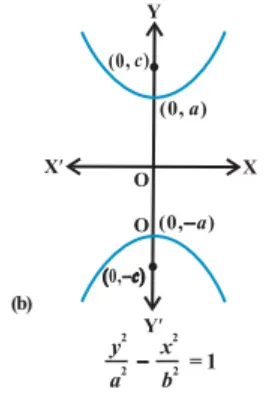

| \[Equation\] | \[Graph\] | \[Focus\] | \[Length\space of\space LR\] | \[Directrix\] | \[Length\space of\space Transverse\space Axis\] |
|---|---|---|---|---|---|
| \[\frac{x^2}{a^2}\space-\frac{y^2}{b^2}\space=1\] |  |
\[(±ae,0)\] | \[\frac{2b^2}{a}\] | \[x=±\frac{a}{e}\] | \[2a\] |
| \[\frac{y^2}{b^2}\space-\frac{x^2}{a^2}\space=1\] |  | \[(0,±be)\] | \[\frac{2a^2}{b}\] | \[y=±\frac{b}{e}\] | \[2b\] |
| \[{x^2}\space-{y^2}\space={a^2}\] | \[(0, ±a{\sqrt{2}} )\] | \[2a\] | \[x=±\frac{a}{\sqrt{2}}\] | \[2a\] |
Equations of Tangent of Hyperbola
| \[Equation\] | \[Parametric\space Coordinates\] | \[Equation\space of\space tangent\] | \[Condition\space of \space Tangency\] |
|---|---|---|---|
| \[\frac{x^2}{a^2}\space-\frac{y^2}{b^2}\space=1\] | \[(asec\theta,btan\theta)\] | \[y=mx±\sqrt{am^2-b^2}\] | \[c=±\sqrt{am^2-b^2}\] |
| \[\frac{y^2}{b^2}\space-\frac{x^2}{a^2}\space=1\] | \[(bsec\theta,atan\theta)\] | \[y=mx±\sqrt{-bm^2+a^2}\] | \[c=±\sqrt{-bm^2+a^2}\] |
| \[{x^2}\space-{y^2}\space={a^2}\] | \[(asec\theta,atan\theta)\] | \[y=mx±\sqrt{am^2-a^2}\] | \[c=±\sqrt{am^2-a^2}\] |
Equations of Normal of Hyperbola
| \[Equation\] | \[Parametric\space Coordinates\] | \[Equation\space of\space Normal\] | \[Condition\space of \space Normality\] |
|---|---|---|---|
| \[\frac{x^2}{a^2}\space-\frac{y^2}{b^2}\space=1\] | \[(asec\theta,btan\theta)\] | \[\frac{ax}{sec\theta}+\frac{by}{tan\theta}=a^2+b^2\] | \[c=\frac{m(a^2+b^2)}{\sqrt{a^2-b^2m^2}}\] |
| \[\frac{y^2}{b^2}\space-\frac{x^2}{a^2}\space=1\] | \[(bsec\theta,atan\theta)\] | \[\frac{bx}{sec\theta}+\frac{ay}{tan\theta}=b^2+a^2\] | \[c=\frac{m(b^2-a^2)}{\sqrt{a^2m^2-b^2}}\] |
| \[{x^2}\space-{y^2}\space={a^2}\] | \[(asec\theta,atan\theta)\] | \[\frac{x}{sec\theta}+\frac{y}{tan\theta}=2a\] | \[c=\frac{2am}{\sqrt{1-m^2}}\] |
Equations of Director Circle of Hyperbola
| \[Equation\] | \[Equation\space of\space Director\space Circle\] |
|---|---|
| \[\frac{x^2}{a^2}\space-\frac{y^2}{b^2}\space=1\] | \[x^2\,+\,y^2\space\,=a^2\,-\,b^2\] |
| \[\frac{y^2}{b^2}\space-\frac{x^2}{a^2}\space=1\] | \[x^2\,+\,y^2\space\,=b^2\,-\,a^2\] |